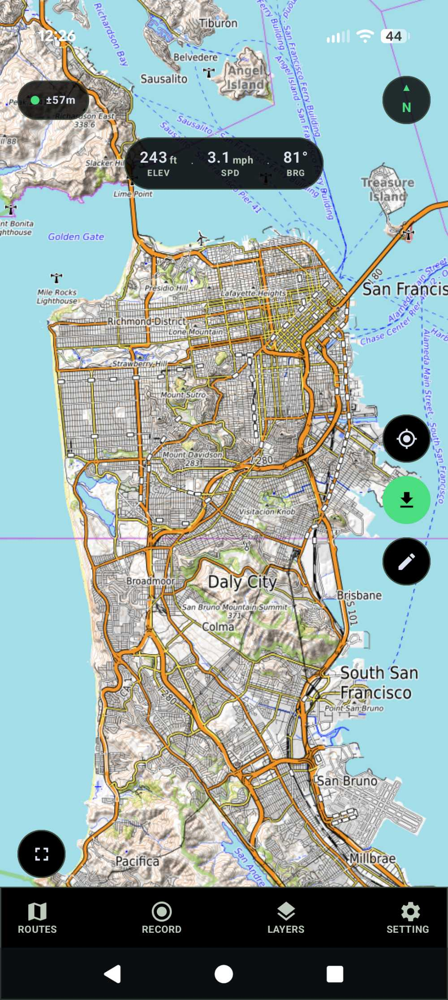
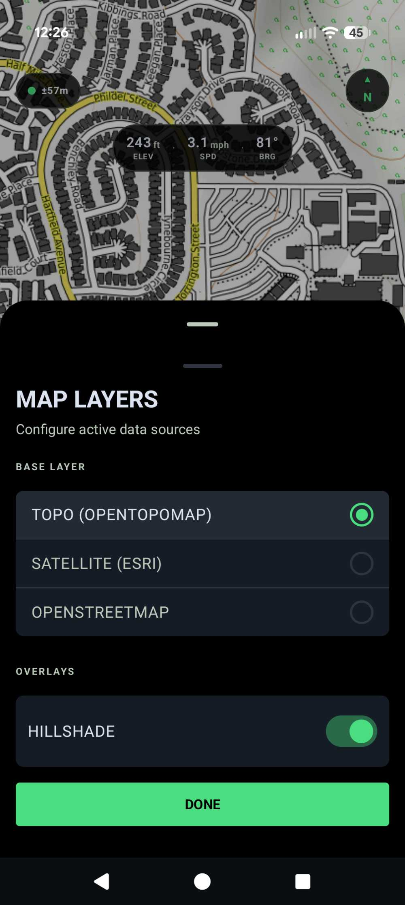
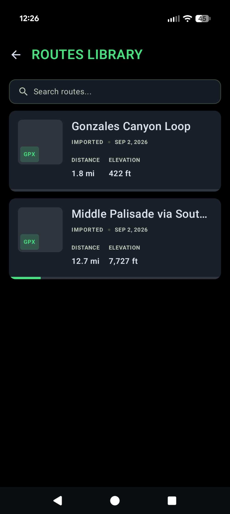
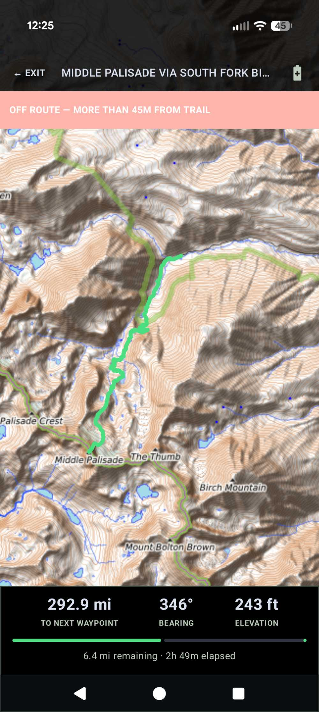
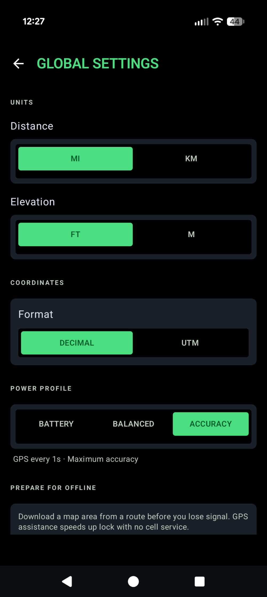

TrailMap GPS
Building a free, import-first hiking app that actually works with no Wi-Fi and no data.





Introduction
I hike with two apps. AllTrails is where I find trails, read what other people thought, and export a GPX file of the route. Gaia GPS is where I actually navigate: topographic maps, satellite imagery, offline downloads, and a GPS track I can trust when I am off the pavement. That split has always bothered me. I am carrying a smartphone that is supposed to replace a paper map, and I still need two programs, a subscription, and a cell signal for the features that matter.
The irritation is specific. Satellite view is locked behind premium. Anything worth using on the trail—offline maps, decent layers, tools that go beyond what a printed quad sheet already does—sits behind a paywall. Gaia’s interface has never felt like something I wanted to look at for twelve hours. And if the phone dies, I am worse off than if I had just brought paper.
I wanted one app for myself. Totally free. Optimized for the United States. Import a route from AllTrails, put it on a topographic map, download the area I will be in, and navigate with GPS when there is no Wi-Fi and no data. I am not a software engineer by training. I am a high-school senior who likes electrical engineering, CAD, and building things that have to work in the real world. This project was a chance to treat a phone the way I treat a chip layout or a welded frame: decide what it has to do, then iterate until the failure modes are honest.
What the app actually had to do
I originally considered replacing AllTrails as well as Gaia. That is not realistic. AllTrails’ value is a proprietary database of routes, photos, reviews, and crowd metadata. I cannot copy that, and I should not. Organic Maps, which is built on OpenStreetMap, was accurate enough on trails I already knew, but I did not want the app guessing a path. If AllTrails mapped a route a certain way, I wanted that exact line on my screen.
So the split became simple. AllTrails stays the discovery tool. TrailMap GPS is the navigator. The daily workflow is: find a trail, export GPX, share it into the app, preview it on a map, save it, download the area, and hike. Later I can record a track or draw a custom line. Browsing nearby OpenStreetMap trails can wait. Importing a file I already trust is the whole product.
The other constraint was battery. OLED screens can turn pixels off if the interface is true black. Satellite tiles are heavier to draw than topo. Animations, blur, and gradients cost power for no navigational benefit. I wanted a Battery Saver navigation mode that drops the map entirely and keeps three numbers: distance, elevation, time. Power profiles in settings—Battery, Balanced, Accuracy—change how often the GPS wakes up. If the GUI is pretty but the phone is dead at mile eight, the design failed.
How I built it
I started with the product decisions, not the code. Platform: Android only, because that is what I carry. Stack: Kotlin and Jetpack Compose for the interface, MapLibre for the map (an open-source renderer that does not require a Google Maps key or a vendor lock-in), Room for storing routes on the device, and DataStore for settings. No accounts. No analytics. No ads. If the data is not on the phone, it should not need to exist.
Before writing screens, I specified them. I used Google Stitch to produce a dark, mountaineering-looking GUI: full-screen topo, a thin metrics bar, large glove-friendly targets, and a bottom bar for Routes, Record, Layers, and Settings. The design language was deliberate. True black chrome. One accent color—trail green—for the route line and active controls. No glassmorphism. The Stitch mockups were not the app, but they gave me something to match instead of inventing a UI by accident.
I do not write Android apps for a living. I directed the architecture and then tested every screen on a Pixel 10 Pro the way I would test a physical build: install it, try the real workflow, write down what broke, and send it back. Import from AllTrails worked early. Almost everything around it did not. That loop—use it, complain in plain language, fix the actual failure—was the engineering method. The notes below are the failures that mattered.
The map was the first real problem
The first topo layer was USGS raster tiles. They look like a familiar paper map until you pinch in. Then they go blurry, because the source simply does not have more detail past a certain zoom. Gaia’s worldwide topo stays readable as you zoom because it is styled from vector data, closer to OpenStreetMap than to a scanned quad. I needed the same property without paying anyone.
I tried a hosted vector style from OpenFreeMap for sharpness, with OpenTopoMap contours overlaid so the map still looked like a USGS sheet. OpenTopoMap is OpenStreetMap data rendered with contour lines. It is not a USGS product, but it behaves like the maps hikers actually read. Satellite came from Esri World Imagery, which allows personal non-revenue use. OpenStreetMap raster was the third layer. Switching among those three sounds trivial. In the first builds I was stuck on topo and could not change layers at all.
That pattern repeated. Features existed in the architecture and failed in the hand. The layer picker did not switch the map. The north button did not reorient. There was no recenter control to jump back to my GPS position. There was no compass rose. I could import a Sierra route while sitting in San Diego and not see it, because the map refused to leave my current location. A hiking app that only shows trails near the living room is not a hiking app.
Making the interface survive a phone
I use Android’s three-button navigation. The first bottom bar sat under the system buttons, so Routes, Record, Layers, and Settings were unreachable. We padded for the system insets. Then the bar dropped too low and I could barely see the icons. Getting a custom bar to sit above both three-button nav and gesture nav, on a Pixel and theoretically on any Android phone, took several passes. Insets are not a visual preference. They are whether the product can be opened.
The metrics bar started as three grey overlays that ate the map. Labels for elevation, speed, and bearing were clipped. Settings stacked unit selectors on top of each other and buried power-profile descriptions under the mode buttons. Opening Routes crashed the app. Opening Settings crashed the app. Battery Saver showed three stats and no map, which was the point of the mode, but “tap to exit” did not exit, so I was trapped on a black screen. None of this is exotic computer science. All of it is the difference between a demo and something I would take into the mountains.
I matched the Stitch HTML as closely as the Android toolkit allowed: type, spacing, the compass with a small arrow on the N so north is obvious, a location button, and a map that can be oriented north-up or in the direction I am facing. I added an elevation profile on the route. I wanted to tap the map to drop waypoints while drawing. Each of those was a separate fight with Compose, MapLibre, and the fact that a map view is a native Android view living inside a Compose layout, which is exactly the kind of seam where touch handling and lifecycle bugs hide.
Download an area, not the world
Offline maps were in the plan from day one. The first download screen asked me to download a map of the world. That is useless. I need a box around a ridge, a canyon, or a twelve-mile loop—not a continent. I wanted to pan and zoom, put a green rectangle over the terrain I cared about, pick a zoom range, see an estimated size, and pull only those tiles.
Building that screen was its own comedy. The UI said “pan the map to position the box,” and the map would not pan. Gestures were being eaten by overlays, or the map was fitting the route and fighting me. Once panning worked, the box had to report its geographic bounds back to the downloader: southwest and northeast corners, converted into tile coordinates at each zoom level, with a safety cap so I could not accidentally request five thousand tiles and fill the phone.
That downloader wrote PNG tiles into local storage. I marked the route as “offline downloaded” and showed a file size. On paper, the app was ready for the backcountry. It was not.
The offline problem I almost shipped
I asked a blunt question late in the project: make this work with no Wi-Fi and no data, and let me download ephemeris—the satellite orbit data that helps GPS lock faster—before I leave service. When I checked whether that work had actually been done, the honest answer was no.
The download button saved OpenTopoMap images to disk. The map renderer never read them. MapLibre was still loading a live style from the internet, plus live contour, satellite, and OSM URLs. If I turned on airplane mode, the style fetch failed and the map went blank even if the tiles were sitting in a folder on the phone. The function that looked up a local tile file was never called. I had built a packing crate and left it in the garage.
GPS had a related lie. The hardware GNSS receiver in a phone does not need cell service. Satellites broadcast their own ephemeris. A cold start without assistance just takes longer. But the app was using Google’s Fused Location Provider, which is happy to lean on network location. There was no way to inject assistance data while I still had signal, and no preference for the GPS chip itself once I did not. A hiking GPS that waits on Wi-Fi is a toy.
The fix was to treat “offline” as a system, not a button. Tiles are stored in a shared cache by source and zoom, not hidden under one route ID. When MapLibre asks the network for a tile, a resource transform intercepts the URL. If the file exists on disk, it serves the file. If I am offline and the file does not exist, it serves a blank tile instead of hanging on HTTPS. The map style is local JSON, not a remote OpenFreeMap URI, so the renderer does not need the internet just to learn how to draw. A download packs topo plus whatever extra layer I am actually using—satellite or OSM—and hillshade if that overlay is on.
For GPS, the tracker prefers the hardware GPS provider. Settings grew a “Prepare for offline” block that downloads assistance data (Android’s XTRA / time injection) and takes a fix while I still have sky and, ideally, signal. Downloading a map area does the same refresh. The route only shows OFFLINE READY if the maps are packed and the GPS data is fresh. Maps without a recent assist show MAPS SAVED. I would rather see an honest label than a green badge that lies at the trailhead.
What “it works offline” means
After that work, the contract is clear. If I download the area I will be in, that area should keep rendering with the phone in airplane mode. The imported route is already on the device; it never needed a network. GPS should still produce a position, faster if I refreshed assistance the day before. If I walk off the packed rectangle, the map goes blank there. If I switch to a layer I did not download, that layer is empty. That is the same deal a paper map makes: you have what you brought.
I could not ethically claim USGS topo when the tiles are OpenTopoMap. I could not claim worldwide Gaia-like vector beauty once the offline path is raster tiles. Zoom still has a ceiling. Hillshade depends on a third-party tile source that is not as reliable as I would like. Those are real limits. They are also written down, which is more than most “offline” buttons do.
What I learned
A feature is not done when the file is written. It is done when the other half of the program reads that file on the trail. Downloading tiles without teaching the map to use them is the software equivalent of packing a stove and leaving the fuel in the car.
Phones are hostile environments. System navigation bars, permission prompts, location providers that silently prefer the network, and map libraries that default to live URLs will all betray a design that looked finished on Wi-Fi. The only test that counts for this app is airplane mode over a downloaded box, with a GPX I imported myself, standing somewhere the map has to be right.
I also learned that free is a stack, not a slogan. MapLibre, OpenStreetMap, OpenTopoMap, Esri’s personal-use imagery, and the GNSS already in the phone are enough to replace the paid core of a hiking GPS. The proprietary piece I cannot replace is AllTrails’ social database, so I did not try. Import the file. Own the navigation. That is a better engineering boundary than pretending I can clone a company.
Looking forward
TrailMap GPS is a personal tool, not a product launch. I still want GPX export, sturdier waypoint editing, and a vector offline pack if I can download glyphs and tiles without dragging the map back onto the network. Battery Saver can get a minimal route line on the black canvas without paying for a full tile set. The hillshade source should be something I can actually cache for years, not a URL that might vanish.
The point was never to out-feature Gaia. The point was the same as the four-bit counter I ran through LibreLane: follow a system all the way through. From a complaint about paywalls, to a workflow, to a map that renders without a cell tower, to a GPS chip that does not wait on Google’s network location. If I cannot open the map on a ridge with the radios off, I do not have a GPS app. I have a website with extra steps.
Related: ASIC Design via LibreLane